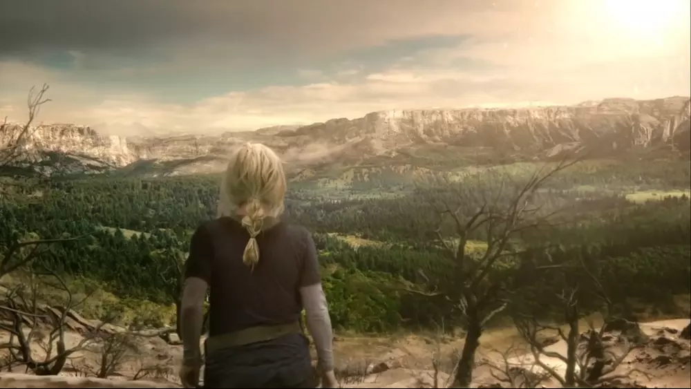

Description du lieu :
Tout au long de la série
Le camp des délinquants (également appelé le Dropship ou le Camp) est une palissade construite autour du Dropship qui a amené les 100 sur Terre. C'est un emplacement majeur dans la première saison et un emplacement mineur dans les deuxième et troisième saisons. Le camp a été brûlé à la suite de l'attaque de Trikru contre lui. Le vaisseau et les murs restent en place, mais la plupart du reste du camp a brûlé ou a été récupéré et est actuellement inhabité.
Quelques photos
 |
Clique sur la photo pour l'agrandir
Tout au long de la série
Arkadia, anciennement connue sous le nom de Camp Jaha, était le port d'attache des Skykru. Le camp est construit autour de la station Alpha qui s'est écrasée après sa descente sur Terre avec les autres stations de l'Arche. Arkadia est considéré comme la maison de tout les Skykru, qu'ils soient venus sur Terre avec la station Alpha, Mecha, Factory, Farm, ou le dropship des délinquants. Arkadia a été détruite par Praimfaya.
Quelques photos
 |
 |
Clique sur la photo pour l'agrandir
Tout au long de la série
Le centre des opérations d'urgence du mont Weather, également connu sous le nom de Mont Weather, est un endroit présenté dans la deuxième, troisième et sixième saison. Le Mont Weather est un bunker souterrain militaire américain et une installation de lancement de silo de missiles située dans les Blue Ridge Mountains, dans l'est des États-Unis d'Amérique sur Terre. Il a été construit pour loger de hauts responsables américains en cas de guerre nucléaire. Les hommes de la montagne sont les descendants des personnes d'origine qui s'y sont réfugiées pendant l'Apocalypse nucléaire. Au cours de la première saison, c'était le point de chute prévu pour les 100, mais ils n'ont pas pu s'y rendre car le territoire appartenait au Trikru. Le Mont Weather est actuellement inactif en raison d'une séquence d'autodestruction initiée par Carl Emerson et la nation des glaces. Il a été définitivement détruit.
Quelques photos
 |
 |
 |
Clique sur la photo pour l'agrandir
Tout au long de la série
Tondc ou Tondisi (Trigedasleng), anciennement Washington D.C., est un endroit sur Terre présenté dans la deuxième saison. Tondc tire son nom de "Washington DC" et est un lieu politique clé par les Trikru. Suite au missile lancé par Mount Weather, Tondc est resté en ruines. Le village s'est rétabli et Clarke à estimé sa population à 300 dans "Heavy Lies the Crown". À partir de "Praimfaya", il est supposé que Tondc est complètement parti ou en ruine car la Terre s'avère inhabitable. Cependant, la Terre est redevenue habitable par la suite...
Quelques photos
 |
 |
Clique sur la photo pour l'agrandir
Tout au long de la série
La zone morte est un endroit présenté dans The 100. On ne sait pas quel endroit il était avant l'apocalypse nucléaire, seulement qu'il n'est pas loin de ce qui était autrefois connu sous le nom de Washington DC. Il est probable que ce soit dans ce qui était New York, car la Statue de la Liberté est vue à moitié enterrée dans le sable pendant les premiers titres et le Manhattan Bridge peut être vu à l'arrière-plan derrière le missile de Jaha après son atterrissage sur Terre. C'est aussi l'endroit ou l'on recontre pour la prmière fois Emori.
Quelques photos
 |
Clique sur la photo pour l'agrandir
Tout au long de la série
L'île de Becca, également connue sous le nom d'île A.L.I.E., est située au large de la côte nord-est de ce qui était les États-Unis. C'est à l'est du New Jersey et au sud de Long Island (New York). Il est également à 210 km de Polis. Avant l'apocalypse nucléaire, cette île était utilisée par Becca et son équipe pour le projet A.L.I.E. Ensuite, il a été utilisé par A.L.I.E et ses partisans. Après qu'A.L.I.E. à été détruite, une équipe des Skykru dirigée par Abigail Griffin utilise l'île pour des recherches sur les Nightblood. Sur l'île, se trouve également un phare et un manoir.
Quelques photos
 |
 |
Clique sur la photo pour l'agrandir
Tout au long de la série
Polis, anciennement Baltimore, était la capitale de la Coalition et l'endroit où résidait le
commandant.
En février 2150, Polis, avec Arkadia et la plateforme Floukru, était sous l'occupation
d'A.L.I.E. et ses partisans. Le trône du commandant (au plus haut niveau de la tour
principale de Polis étant le siège du pouvoir et la base des opérations de l'A.L.I.E.
pendant le court conflit.
Cependant, A.L.I.E. a été vaincu dans le final de la saison 3.
À partir de la saison quatre, Polis est devenue une zone de guerre. À la fin de la saison
quatre, Polis a été détruit par le deuxième Praimfaya.
Plus de cent ans après l'événement de "Damoclès", le groupe de Clarke retourne sur une Terre
régénérée, où il n'y a presque aucun signe des ruines de Polis, la zone ayant été reprise
par une forêt à la place. Les seuls vestiges semblent être quelques roches tombées au-dessus de
l'entrée du bunker et de la base envahie de la tour Polis.
Quelques photos
 |
 |
Clique sur la photo pour l'agrandir
Tout au long de la série
Shallow Valley (aussi connu sous le nom d'Eden ou the Valley) est située dans ce qui était
autrefois le nord-ouest de la Virginie sur Terre.
Avant la deuxième apocalypse nucléaire, il était habité par le clan de la Shallow Valley
(Louwoda Kliron).
La vallée était un emplacement majeur dans la saison cinq; servant de la seule "tache verte"
sur la planète. Cela était dû en partie à la "Praimfaya" qui est passé au-dessus de la vallée.
C'est aussi le village d'origine de Madi.
Quelques photos
 |
 |
Clique sur la photo pour l'agrandir
Tout au long de la série
Polaris, également connue sous le nom de 13e Station (anciennement connue sous le nom de Station Polaris), était une station spatiale appartenant à la société de Becca. Il a été utilisé par Becca pour mener des recherches sur A.L.I.E. 2.0 pendant deux ans après l'apocalypse nucléaire. Il a été détruit par Alpha Station le jour de l'Unité afin que les autres stations se mettent en ligne et rejoignent l'Arche.
Quelques photos
 |
 |
 |
Clique sur la photo pour l'agrandir
Tout au long de la série
L'Arche était une station spatiale en orbite qui servait de domicile aux Skykru. Les Skykru
sont les descendants de ceux qui ont échappé à l'Apocalypse nucléaire sur Terre 97 ans avant les
événements de la série. Avec le Camp des délinquants, The Ark a servi de lieu principal lors des
événements de la première saison de la series.
Suite aux événements du final de la saison 1, l'Arche a été divisée en ses
stations originelle; ne laissant que la partie gouvernement et science (Go-Sci) en orbite.
À la fin de la deuxième saison, une composante nucléaire de la station spatiale de haute
technologie est en possession de l'Intelligence Artificielle A.L.I.E.
Alors que l'anneau Go-Sci restait en orbite, il est utilisé par A.L.I.E. dans la saison
trois et le Spacekru dans la saison quatre. Spacekru, composé de cinq Skykru et de deux
Grounders, a vécu à bord de l'Anneau pendant les 6 années qu'il a fallu pour que les niveaux de
rayonnement chutent après la deuxième apocalypse nucléaire. Ils sont restés à bord jusqu'à
l'épisode de la saison cinq, «Sleeping Giants», lorsqu'ils ont abandonné l'anneau.
La station entière était gouvernée par un chancelier et son conseil. Le chancelier était élu
par le peuple et le conseil. Sous le Conseil et le Chancelier se trouvaient les gardes de
l'Arche qui étaient la principale force de sécurité et d'application de la loi sur les 12
stations.
Quelques photos
Clique sur la photo pour l'agrandir
Tout au long de la série
Eligius IV est un vaisseau minier et une station spatiale précédemment construits et
possédés par Eligius Corporation avant la première apocalypse nucléaire. Il a été conçu pour
être utilisé pour des missions interstellaires pour extraire des astéroïdes et a ensuite été
utilisé pour rechercher des planètes habitables. Le vaisseau a été construit pour accueillir 500
personnes dans un cryo-sommeil indéfinie.
En plus de l'équipement minier, de la nourriture pour plusieurs semaines, un
petit recycleur d'eau, un navire de transport et un assortiment d'armes et de matériel de
qualité militaire pour les gardes. Y compris les armes à feu, les missiles et les colliers
anti-chocs pour les détenus. Il dispose également d'une baie médicale entièrement équipée et
d'un grand approvisionnement en carburant à long terme.
C'était un refuge pour les seuls survivants de la race humaine, qui prévoyaient à l'origine
de rester sur le navire en stase pendant une décennie jusqu'à ce que la Terre soit habitable
après l'événement de Damoclès.
Cependant, alors que l'on croyait que la Terre était toujours inhabitable,
Monty a mis le navire sur la voie d'un nouveau monde natal potentiel pour l'humanité dans un
autre système solaire avant de mourir de vieillesse après sa femme, après avoir découvert après
30 ans de travail qu'Eligius III avait été une mission de colonie pour installer cinq autres
mondes potentiellement habitables.
Quelques photos
 |
 |
 |
Clique sur la photo pour l'agrandir
Tout au long de la série
Sanctum (appelée "Planète Alpha" par l'équipe Eligius III) est une lune partageant des similitudes atmosphériques avec la Terre. Il est situé dans la zone Boucle d'or d'un système d'étoiles binaires, ce qui signifie qu'il est dans la zone habitable et a deux soleils. C'est le monde le plus proche de la Terre et probablement le plus semblable. Il a été colonisé par une équipe de la Terre, et composé de quatre familles, les Primes et un autre individu. En utilisant des Mind Drives, ils ont continué leur règne ici pendant plus de deux siècles. Comme les autres planètes de mission, il se trouve à proximité d'un trou noir.
Quelques photos
 |
Clique sur la photo pour l'agrandir
Tout au long de la série
Nakara est une planète gelée avec une atmosphère respirable. C'était l'un des six mondes
connectés par la pierre d'anomalie. La présence de l'Anomalie à également été détectée sur
la planète et elle est utilisée par les Disciples comme cimetière pour leurs morts.
L'usage principal de la planète est un Ossuarium, ou l'enterrement des morts pour les
disciples. Les ouvertures de surface indiquent la présence d'entités organiques.
Quelques photos
 |
Clique sur la photo pour l'agrandir
Tout au long de la série
Etherea est une planète habitable qui est l'un des six mondes reliés par la pierre
d'anomalie. La présence d'Anomalie a été détectée sur la planète. Il a également une
atmosphère similaire à la Terre.
Le temps sur Etherea peut devenir extrême avec des tempêtes de neige qui peuvent durer des
mois. Bill Cadogan a été piégé par une telle tempête pendant trois mois, tandis que Bellamy
Blake et le Disciples Doucette ont été piégés pendant au moins deux mois par une autre. Comme
sur Terre, les jours commencent finalement à raccourcir, bien que l'on sache que les violentes
tempêtes se produisent avant cette période qui, sur Terre, se situe au début de l'hiver.
Quelques photos
 |
Clique sur la photo pour l'agrandir
Tout au long de la série
Surnommée Skyring par Hope Diyoza, c'est une planète habitable avec un anneau visible
dans son ciel. C'était l'une des destinations de la mission Eligius III. Elle a une
atmosphère similaire à la Terre, et la présence d'anomalie sur cette planète est détectée sous
l'eau et est trop profonde pour nager sans équipement de protection.
La dilatation du temps sur Skyring est élevée. Les secondes sur Sanctum équivalent à des
mois sur Skyring tandis qu'un jour peut égaler des siècles. Cela est dû au fait que les planètes
sont plus éloignées d'un trou noir par rapport aux autres planètes de la mission.
La planète est également connue sous le nom de Beta par Mission Team Beta et Penance par les
Disciples. Skyring est principalement utilisé comme planète prison par les Disciples pour
envoyer leurs membres enfreignant la loi en guise de punition.
Quelques photos
 |
 |
 |
Clique sur la photo pour l'agrandir
Tout au long de la série
Bardo est une planète extraterrestre devenue inhabitable, la laissant sans atmosphère
respirable. C'est la que résident des Disciples. Elle abritait autrefois une race
extraterrestre appelée les «Bardoans» qui contrôlaient l'anomalie temporelle.
Les Bardoans étaient des géants extraterrestres qui ont accidentellement détruit leur
planète. Ils ont construit des structures souterraines pour survivre avant de s'éteindre. Selon
Anders, ils ont été anéantis par le Gen-9 et transformés en géants de cristal. Ils ont laissé
derrière eux des journaux faisant référence à leur utilisation de la pierre d'anomalie et à ce
que Becca Franko appellerait «le code final» menant au jour du jugement et à la fin de leur
espèce. En réalité, il s'agissait d'un test du juge pour déterminer si une race se
transcenderait ou serait anéantie. Lorsque les Bardoans ont échoué au test, le juge a envoyé
Gen-9 pour les éliminer.
À un moment donné après l'extinction des Bardoans, les humains de la Terre sont arrivés à
travers l'anomalie temporelle fuyant l'apocalypse nucléaire. Ils se sont installés à Bardo et
sont devenus les Disciples. Ils ont trouvé et adopté une grande partie de la technologie des
Bardoans et, au cours des siècles, ont traduit les journaux qu'ils ont laissés derrière eux.
Chaque personne avait un code biométrique unique par lequel une pierre d'anomalie peut trouver
quelqu'un dans l'univers. Le code avait l'habitude de tenir sur le bras d'un Bardoan, mais pour
les humains, le seul endroit assez grand est leur dos.
Quelques photos
 |